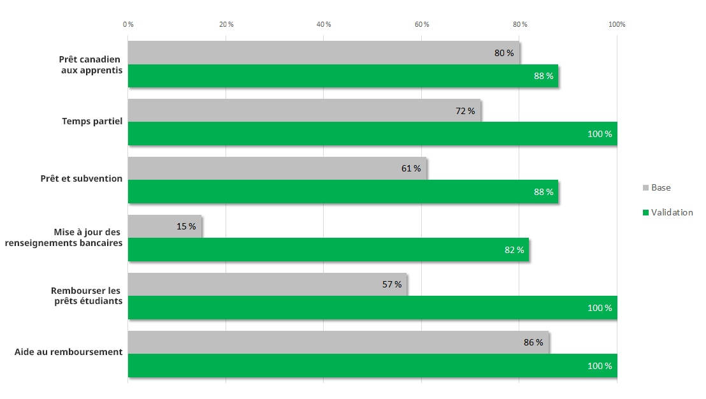

Résumé de recherche : Optimisation des prêts et des bourses aux étudiants
En 2016, le gouvernement du Canada a soutenu 490 000 étudiants à temps plein au moyen d’un total de 2,7 milliards de dollars en prêts d’études. Un grand nombre d’étudiants entament le processus de leur prêt étudiant ou le gèrent grâce aux pages sur les prêts et les bourses aux étudiants du site Canada.ca. Au cours de l’automne 2018, nous avons entamé un projet collaboratif visant à améliorer la réussite des étudiants en utilisant ces pages. L’équipe de projet comprenait des membres de l’équipe des programmes de bourses et de prêts canadiens d’études, des membres de l’équipe Web d’Emploi et Développement social Canada (EDSC), et des membres du Bureau de la transformation numérique au Conseil du Trésor.
Nous avons circonscrit le projet aux pages du site Canada.ca qui se rapportent à l’aide aux étudiants. Le Centre de service national de prêts aux étudiants (CSNPE) dispose d’un site Web distinct où les étudiants doivent ouvrir une session.
Les étudiants interagissent principalement par l’entremise de leur province
Bien que ce soit le gouvernement du Canada qui finance les prêts étudiants, ces prêts sont gérés par les provinces. Les étudiants utilisent les sites provinciaux afin de présenter une demande ou d’en présenter une nouvelle. Il se pourrait qu’à aucun moment les étudiants n’aient à interagir avec le site Canada.ca. Généralement, les étudiants ne consultent les pages du gouvernement fédéral que lorsqu’ils doivent rembourser le prêt ou lorsqu’ils ont besoin d’aide pour le rembourser.
Aux fins de la tâche de remboursement d’un prêt étudiant, la page « Tenir à jour votre page étudiant » dans le site Canada.ca a été une des pages les plus utilisées. Des visiteurs, 87 % y ont accédé au moyen de Google. À ce stade, 59 % ont poursuivi jusqu’à la page de connexion du site du CSNPE.
Leçons tirées de l’étude de référence
Au cours du printemps 2018, EDSC a mené un essai de facilité d’emploi sur certains des principaux scénarios de tâches des étudiants. Nous avons été en mesure d’analyser ces données en vue d’utiliser un ensemble de scénarios de tâches pour établir notre mesure de référence du rendement des tâches. Cette étude a montré que la navigation du contenu posait de vrais défis. Le nombre de couches liées aux pages du sujet était tel qu’à partir de la page d’accueil il a fallu cliquer beaucoup de fois afin d’atteindre les pages se rapportant effectivement aux prêts étudiants.
Un autre défi s’est présenté dans la façon dont le contenu des bourses et des prêts a été réparti. Étant donné que ce contenu est géré par diverses équipes de programme, celles-ci ont réparti le contenu dans des pages distinctes. Cependant une telle répartition n’était pas pertinente pour les étudiants, car ces derniers présentent une demande concernant à la fois les prêts et les bourses, dans le cadre d’un formulaire de demande unique.
Les essais menés au cours de plusieurs années ont montré que les étudiants étaient en mesure de trouver ce formulaire de demande unique environ 60 % des fois. Ce projet nous a donné la possibilité de nous pencher sur l’intégration du contenu lié aux bourses et aux prêts. Il nous a permis de fournir un parcours évident vers les réponses, en éliminant des couches liées à des renseignements axés sur le programme, qui portaient à confusion.
Nouvelle conception pour répondre aux questions des étudiants et non à titre informatif sur le programme
L’équipe de projet s’est concentrée sur l’élimination de nombreuses pages concernant des renseignements sur le programme, qui n’aidaient pas les étudiants à trouver les réponses à leurs questions. Dans le cadre des ateliers de conceptions, nous avons effectivement réduit les pages des sujets, nous avons éliminé des sujets et déplacés certains ailleurs. Cela a abouti à un nouvel ensemble de pages moins volumineux. Ensuite, nous avons utilisé le contenu réduit et nous nous sommes concentrés à acheminer les étudiants vers les provinces afin qu’ils présentent leurs demandes, ainsi que vers le CSNPE pour que ce dernier gère leurs prêts.
Toutes les routes mènent à l’aide aux étudiants
Nous avons examiné les analyses ainsi que les études précédentes. Celles-ci ont montré que les étudiants utilisaient les thèmes Emplois, Prestations et Argent, afin d’obtenir le contenu sur les prêts et les bourses aux étudiants. Nous avons conservé ces chemins, mais nous les avons épurés et raccourcis.
Navigation en fonction d’une tâche et non d’un programme
Nous avons regroupé le contenu sur les prêts et les bourses dans le cadre d’une nouvelle conception, au lieu de le laisser dans des sections de programmes distinctes. Nous avons déplacé les descriptions des programmes dans le site d’EDSC.
Conception aux fins des réponses et à non à titre informatif
L’étude de référence a montré qu’il était difficile pour les utilisateurs de trouver le site du CSNPE et de comprendre ce que ce site leur permettait d’effectuer. Il semblerait que les personnes oublient souvent le nom complexe du programme du Centre de service national de prêts aux étudiants. De nombreuses recherches ont été effectuées sur Google et sur le site Canada.ca comportant des variantes du terme « CSNPE ». Pour régler ce problème, l’équipe a utilisé le terme qui figure dans le titre de la nouvelle page : Gérer votre prêt étudiant au CSNPE. De plus, nous avons ajouté un seul bouton principal permettant d’acheminer les étudiants vers la connexion à leur compte de CSNPE.
Utilisation de données probantes à l’égard de la langue de conception
L’équipe a effectué des recherches afin de comprendre la façon dont les étudiants recherchent les renseignements. Elle a examiné les articles de Reddit, a recherché des données à partir du site Canada.ca et dans le cadre de requêtes soumises à Google et des tendances connexes. L’équipe a utilisé ce qu’elle a appris afin de mettre à jour le contenu de manière à ce que les étudiants puissent plus facilement trouver ce qu’ils cherchent et mieux le comprendre.
| Avant | Après |
|---|---|
| bourses aux étudiants et prêts aux étudiants | bourses et prêts aux étudiants |
| Aide financière aux étudiants | Aide aux étudiants |
| Délai de grâce de six mois | Période de non-remboursement de six mois |
| Paiement unique | Paiement forfaitaire |
Mesurer la réussite
Dans l’ensemble, le rendement des tâches a augmenté en passant d’un taux de réussite de 61 % à 88 % lorsque nous avons mis à l’essai les scénarios de tâches dans le cadre du prototype.
Ce graphique montre la mesure de référence au début du projet par rapport à la mesure de validation du prototype redessiné par l'équipe de projet.
Taux de réussite des tâches – tableau
| Tâche | Base | Validation |
|---|---|---|
| Prêt canadien aux apprentis | 80 % | 88 % |
| Temps partiel | 72 % | 100 % |
| Prêt et subvention | 61 % | 88 % |
| Mise à jour des renseignements bancaires | 15 % | 82 % |
| Rembourser les prêts étudiants | 57 % | 100 % |
| Aide au remboursement | 86 % | 100 % |
Ce que nous avons appris
Afin de mieux servir la population canadienne, les équipes doivent supprimer les renseignements sur les programmes et se concentrer à offrir des réponses et un service. Dans le cadre des prêts étudiants, cela revenait à acheminer les utilisateurs vers les provinces et le CSNPE. Les pages du site Canada.ca sont publiées uniquement afin de combler les écarts qui existent dans les réponses d’un point de service à l’autre.
Demander les résultats de recherche
Si vous souhaitez consulter les détails des résultats de recherche dans le cadre de ce projet, veuillez envoyer un courriel à dto.btn@tbs-sct.gc.ca.
Dites-nous ce que vous en pensez
Envoyez un gazouillis en utilisant le mot-clic #Canadapointca.
Pour en savoir plus
- Consultez les pages mises à jour : Aide aux étudiants
- Lisez notre billet de blogue : Six conseils en matière de conception de contenu tirées de nos projets d’optimisation sur les prêts étudiants et les prestations parentales
- Consultez les aperçus de nos autres projets avec nos partenaires